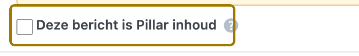

Digitale Bazen · Snelstart
Onthoud dit. De Generator publiceert nooit zelf. Alles komt als concept in je Blogs. Er gaat niets live zonder dat jij op Publiceren klikt.

| Onderwerp | Waarde | Toelichting |
|---|---|---|
| Blogs per dag | 10 | Lopende generaties tellen mee |
| Plan-analyses | Onbeperkt | Tellen niet mee voor je limiet |
| Lengte per artikel | 2.500 – 3.200 woorden | |
| Nieuwe upload onderzoek | Vervangt de zoekwoorden | Je plan en statussen blijven staan |
| Tempo in de pilot | 2 tot 4 per maand | Maak eerst een cluster áf voor je een nieuw begint |